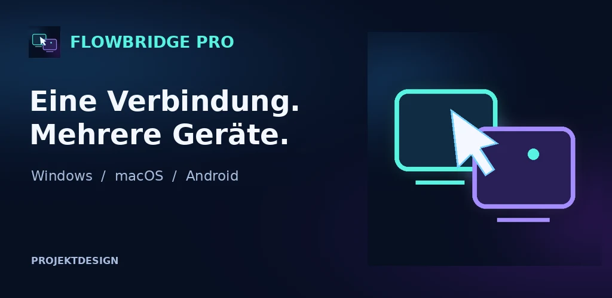
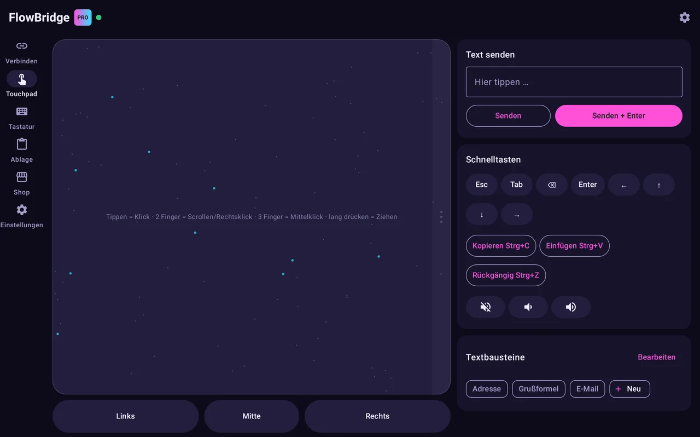

Handy und Tablet
Touchpad, Tastatur, Zwischenablage und Textbausteine. Im Querformat liegen Touchpad und Tasten als Steuerpult nebeneinander. Ab Android 8.
FlowBridge macht Handy und Tablet zum Touchpad und zur Tastatur für deinen Windows-PC und deinen Mac. Am Schreibtisch teilst du Maus, Tastatur und Zwischenablage zwischen PC und Mac. Alles läuft verschlüsselt im eigenen Netzwerk, ohne Konto und ohne Abo-Zwang.
Stand November 2026: Die Android-App ist im internen Test bei Google Play. Die Desktop-App ist gebaut, der Test auf echter Hardware läuft noch.

Touchpad, Tastatur, Zwischenablage und Textbausteine. Im Querformat liegen Touchpad und Tasten als Steuerpult nebeneinander. Ab Android 8.
Nimmt Handy, Tablet und Mac an. Maus und Tastatur wandern über den Bildschirmrand zum Mac. Gebaut, Praxistest steht aus.
Für Apple Silicon und Intel. Muss derzeit selbst aus dem Quellcode gebaut werden, ein fertiges Paket folgt.
Alle Punkte sind eingebaut und automatisch getestet. Der Test auf echten Geräten läuft.
Bewegen, tippen, Rechtsklick mit zwei Fingern, scrollen, ziehen. Mit Scroll-Leiste und Linkshänder-Modus.
Text mit Umlauten und Emojis, Live-Tippen, Sondertasten, F1–F12, Ziffernblock, Kurzbefehle mit Strg oder ⌘.
Text zwischen Handy, PC und Mac, mit Verlauf. Dazu Textbausteine für häufige Texte.
Der Zeiger gleitet über den Bildschirmrand vom PC auf den Mac. Die Tastatur folgt.
Ende-zu-Ende-Verschlüsselung, Kopplung per 6-stelligem Code, automatische Erkennung im WLAN. Keine Cloud.
Dateien und Bilder übertragen, mehr als zwei Computer, Steuerung über das Internet.
Standard sind die augenschonenden Designs „Sanft Hell“ und „Sanft Dunkel“. Die Bilder sind echte Ansichten der Android-App mit Beispieldaten.

Im internen Test bei Google Play. Der öffentliche Store-Link folgt nach der Freigabe.
Google Play: folgtVersion 0.3 ist gebaut. Veröffentlichung im Microsoft Store nach dem Praxistest.
Download: folgtDerzeit nur zum Selbstbauen aus dem Quellcode.
Download: folgtTouchpad, Tastatur, Zwischenablage, Verschlüsselung und Sicherheitsupdates kosten nichts. Pro ist als Einmalkauf ohne Abo geplant: auf Android über Google Play (Premium-Designs, Touchpad-Designs, eigene Akzentfarbe, unbegrenzte Textbausteine, Präsentations-Leiste), am Desktop mit Bildschirm-Editor, eigenen Tastenkürzeln und Premium-Designs. Die Preise stehen noch nicht fest. Ein Kauf ist derzeit nicht möglich.
Noch nicht öffentlich. Die Android-App läuft im internen Test, die Desktop-App wird noch auf echter Hardware geprüft.
Nein. Die Grundfunktionen sind kostenlos, Pro ist als Einmalkauf geplant.
Eingaben und Zwischenablage-Text gehen verschlüsselt direkt zwischen deinen gekoppelten Geräten im lokalen Netzwerk. Es gibt keinen Server dazwischen, kein Konto, keine Werbung und kein Tracking.
Nein. Handy oder Tablet können auch nur den Windows-PC steuern.